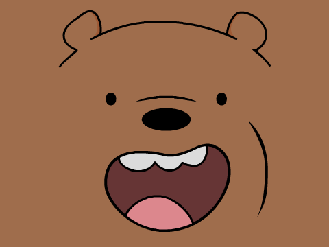
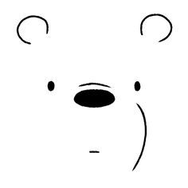
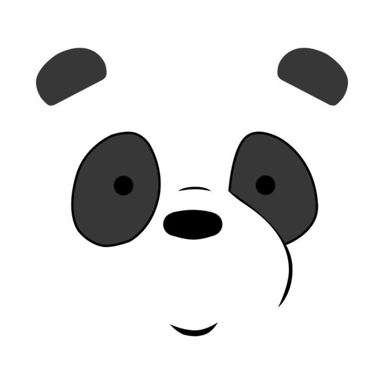
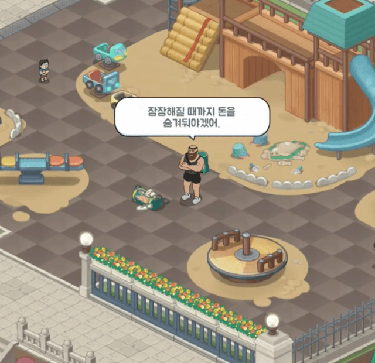
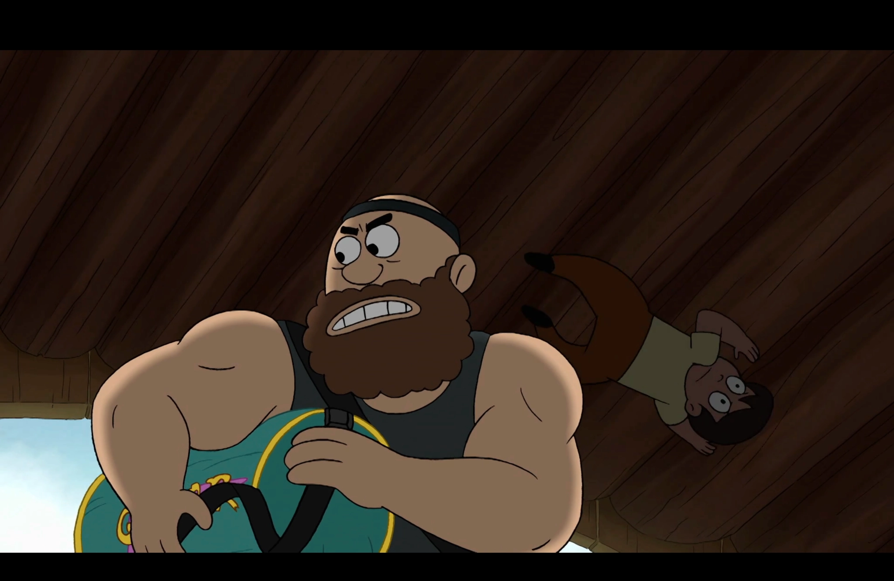

월드맵 기획 · 미션 연출 · 시나리오
위베어 베어스 IP 기반 퍼즐 게임 월드맵 스토리 구조 총괄. 게임플레이 동선과 서사를 하나의 흐름으로 연결하는 구조 설계 담당.
미션 동선 설계: 악당 추적 스토리에서 자연스럽게 맵을 순회하도록 미션 배치. 기존에 꾸민 공간을 재경험하게 하여 이야기 마무리와 공간적 완결감 동시 제공.
디자인 의도
새로운 장소로 이동하기 전에 유저들이 꾸민 장소를 한 번 더 둘러보게 해주고, 악당과의 이야기를 마무리한다.

1광장
2놀이터
3테니스장
4주차장
심층 케이스
놈놈 저택 · 가방 되찾기 미션
한 파트 미션 전체 단독 설계 사례. 시나리오 집필 및 미션 연출 전담, 플레이어 동선, 감정 곡선, IP 세계관 세 가지 제약을 동시에 만족하는 구조 설계.
캐릭터 역할 분배: 판다가 재치로 악당을 검거하는 장면 구성을 위해 아이스베어는 기습 무력화, 그리즐리는 추격 당하는 상태로 설정하여 서사적 공간 확보.

그리즐리 악당에게 쫓기는 상태
아이스베어 기습으로 무력화
판다 재치로 악당 검거
쿼터뷰 연출 적응: 원작의 해당 장면을 쿼터뷰로 직접 재현하기 어려워 순간이동 연출로 변형. 미디엄 제약 인식 후 대안 연출 적용.

디자인 의도
곰들이 직접 사람을 공격하는 것은 원작의 성격과 맞지 않는다. → 테니스공 발사기라는 도구를 활용한 간접 공격으로 해결.